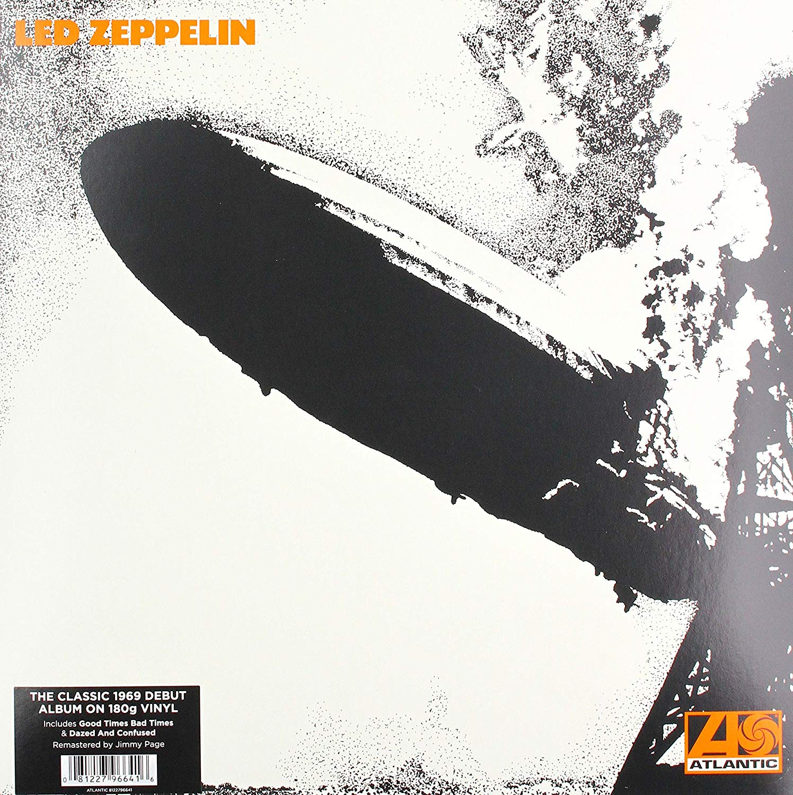
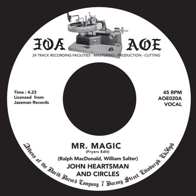
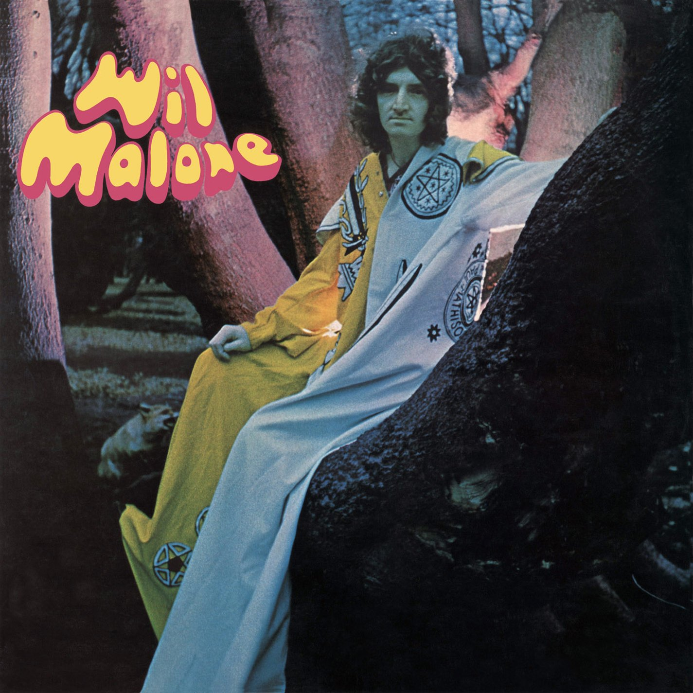
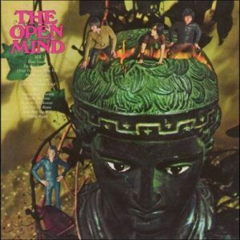
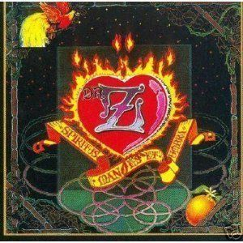
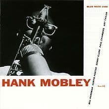

Top 5 Discos de Vinilo
Recopilación de los mejores 5 discos de 2019
| Puestos | Discos | Descripcion |
| 10º | Never Mind the Bollocks es el único trabajo de los Sex Pistols. Vinilo de 1977 editado por Virgin Records, made in England. | |
| 9º | = | Never Mind the Bollocks es el único trabajo de los Sex Pistols. Vinilo de 1977 editado por Virgin Records, hecho en England.
El 3 de Junio se reeditan los primeros tres álbumes remasterizados por Jimmy Page, acompañados de material inédito Se publicarán múltiples formatos: CD, Vinilo, Álbum digital y Caja Súper Deluxe en Edición Limitada John Bonham, John Paul Jones, Jimmy Page y Robert Plant formaron Led Zeppelin en 1968. En la siguiente década la banda se convirtió en uno de los grupos más influyentes innovadores y de mayor éxito de la música moderna, vendiendo más de 300 millones de álbumes en todo el mundo. Sus canciones son de las más celebradas de la historia del rock ‘n’ roll y a día de hoy tiene eco entre fans de todas las edades en todo el planeta. No importa cuantas veces hayas escuchado su música porque Led Zeppelin nunca han sonado como lo harán a partir de ahora. |
| 8º |  |
Los álbumes remasterizados de The Beatles, publicados en CD en 2009 y para descarga digital exclusivamente en iTunes en 2010, se lanzan ahora en una esperada edición en vinilo stereo el 13 de noviembre de 2012. Fabricados en vinilo 189 gramos con la máxima calidad de audiófilo y reproducciones facsímil de los discos originales, los 14 álbumes recuperan su gloria original con todos sus detalles, incluído el poster del grupo en The White Album, los recortables de Sgt. Pepper’s Lonely Heart Club Band y las fundas interiores especiales de los discos. Cada LP estará disponible individualmente y todos juntos en una caja de edición limitada a 50.000 ejemplares con un libro de 252 páginas. |
| 7º |  | Entre 1964 y 1972, Wilson Pickett se estableció como uno de los mejores hombres del alma de todos los tiempos con una serie de éxitos incendiarios de pop y R&B como In the Midnight Hour, Land of 1,000 Dances, Mustang Sally y Funky Broadway. Pero la carrera abrasadora de Wicked Pickett no se detuvo cuando dejó Atlantic Records. Comenzando con el Sr. Magic Man de 1973, Pickett grabó cuatro álbumes de estudio conmovedores para RCA Records, donde, en dos años extremadamente productivos, logró sus últimos éxitos Hot 100, así como una serie de éxitos en las listas de R&B. Sin embargo, la discografía RCA de Pickett ha sido casi ignorada en la era de los discos compactos. |
| 6º |  | Lanzamiento 2012. Este álbum fue lanzado en 2009 a través de Record Collector en el Reino Unido y ahora está disponible para la venta minorista. Edición de vinilo de 180 gramos para audiófilos de este muy buscado álbum de 1970. Un clásico psicológico que recuerda el lado trivial de Donovan. Poner el ácido en "Acid Folk". |
| 5º |  |
Hubo una serie de álbumes creados en cantidades muy pequeñas en los años 60 y 70 que por su escasez son objetivo de coleccionistas, y que siempre mantendrán su valor. Algunos de estos discos antiguos, hay que decir, contienen música que es pobre, pero Peter Howell y John Ferdinando lanzaron Cuatro álbumes bajo cuatro nombres diferentes. Los arreglos maravillosos de las canciones Fly Away y otros LPs como Ithaca’s A Game For All Who Know siguen siendo santos griales para coleccionistas. |
| 4º |  | Este disco vinilo ya está valorado en unos 800€, aunque todo dependerá del estado del disco. En cualquier caso, es una joya psicodélica conocida. Sin embargo, al igual que los álbumes de Vashti Bunyan y Elias Hulk que se encuentran en un rango de precios similares, o Leafhound’s Growers de Mushroom en un rango superior, una copia de este álbum en perfectas condiciones va a mantener debido a la demanda entre los coleccionistas. La fracción de copias que se encuentran en una condición óptimas es muy escasa. A pesar de una reciente reedición, la demanda de este LP no va a desaparecer durante al menos en una década y seguirá estando en la lista de los vinilos más buscados por algún tiempo. |
| 3º |  | Todavía hay gran interés en la discográfica Vertigo y el famoso frenesí que se desató en eBay desde hace unos años lo ha incrementado. Se han vendido copias de Gravy Train’s Ballad for A Peaceful Man o An Old Raincoat Won’t Let You Down de Rod Stewart por precios muy superiores a los catalogados. Three Parts To My Soul de Dr. Z es uno de los más raros y por lo tanto una buena inversión, si se puede encontrar una copia con el vinilo y la carátula en óptimas condiciones a un precio razonable. Lo mismo se aplica a la escasez de vinilos de Pieces Of Me de Linda Hoyle, a partir de 1971. |
| 2º |  | Hank Mobley es un tenor del soul que sus álbumes de Blue Note son unos de los vinilos más buscados en todo el mundo. El jazz no pasa de moda, y, a pesar de los programas internacionales de reediciones, los coleccionistas todavía quieren discos clásicos de sellos como Blue Note, Riverside, Prestige o Impulse. Debes prestar atención a la edición de estos álbumes ya que hubo muchas. Los coleccionistas se toman muy en serio que las etiquetas muestren la dirección de la discográfica Blue Note en ellas (47 West 63rd NYC/47 West 63rd New York 23). |
| 1º | El valor de este disco de vinilo del punk sigue creciendo, una copia en perfectas condiciones sigue siendo la joya de la corona de cualquier colección punk. A pesar de tener un precio de orientación de 10.000€, esto es una buena inversión. Los Sex Pistols han conectado con cada nueva generación que ha surgido desde 1977. Una copia en perfectas condiciones de su álbum prensado en Reino Unido Never Mind The Bollocks. Here’s The Sex Pistols también es una buena inversión. |